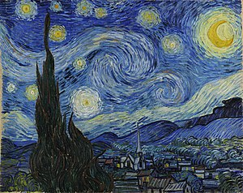

La Notte stellata, certamente una delle opere vangoghiane più celebri, risponde perfettamente a quest'esigenza. In questo dipinto, infatti, il pittore ha certamente cercato il contatto diretto con la realtà, dipingendo quello che si poteva vedere dalla finestra della sua stanza nel manicomio di Saint-Rémy. Van Gogh, tuttavia, non ha ripreso fedelmente questa veduta notturna, bensì l'ha manipolata con mezzi plastici, interiorizzandola fino allo spasimo e trasformandola in una potente visione onirica in cui poter fare affiorare le sue emozioni, le sue paure, i suoi viaggi dell'anima. La Notte stellata, pertanto, non offre all'osservatore un'immagine fedele della realtà, quanto una forma di «espressione» di quest'ultima.